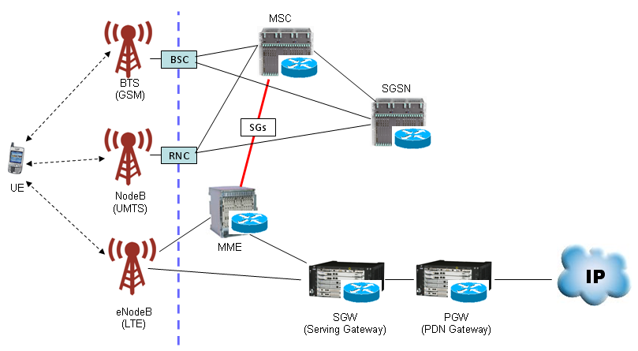
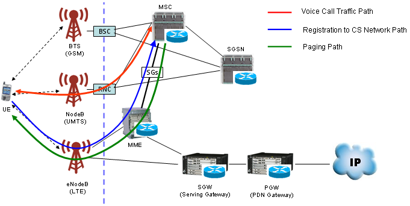

|
LTE Quick Reference Go Back To Index Home : www.sharetechnote.com |
|
|
Basically LTE is a Packet only technology. It is well designed for data traffic. Then what about Voice call ? This has normally done via CS call in existing technology (WCDMA, GSM, C2K etc). There can be a couple of options to achieve voice call in LTE. One of the option is just to use packet based voice call (e.g, VoIP or IMS). Another option is to use multiple technology. For example, if UE wants to have packet communication, the network redirect it to the normal LTE core network and if UE wants to do voice call the network redirect the call to one of the existing technology like WCDMA, GSM or C2K. This technology that enables to redirect connection to other technology (e.g, WCDMA, GSM, C2K) is called 'CS Fallback'.
It may sound very simple and usefull... but it is not that simple as you think. First, UE should support multiple technologies and network side would be even more complicated. One of the simplest representation on network side would be as follows. As you may guess, there should be some link point between LTE network and 2G/3G network to make this CS fallback happen. In this case, the connection point is between MSC and MME and the interface connecting these two entities are called 'SG' interface.

Now LTE and 2G/3G network is connected. Now let's look into the interplay of the two networks to make the voice call possible. I think these interplay can be explained by adding just three lines as follows.

Is this everything make CS Fallback happen ? Definately not. There is some difference in terms of signaling protocol between LTE and 2G/3G. To make these two different protocol work together would not be that simple. To make this happen, LTE network should have a certain level of understanding (compatibility) with 2G/3G protocol and 2G/3G network shouldhave a certain level of understanding LTE protocol. It is not the scope of this short section to describe the whole details of 'CS Fallback' protocol side. So just keep it mind that it would be pretty complicated process and try to google some of articles.
If you are interested in any practical example of CsFB to the level of RRC/NAS message, refer to CSFB (LTE-->WCDMA) section of Handover page.
One thing I would like to recomment is
There are several different ways to implement CSFB (CS Fallback) and one of the most common way is to use 'Redirection' method. For the details of 'Redirection' mechanism, refer to 'Redirection' section.
|